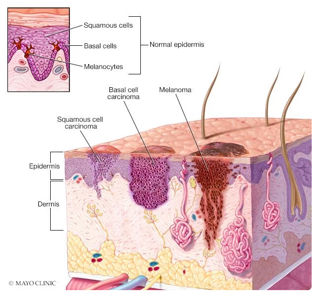

Basal Cell Carcinoma
Understanding Basal Cell Carcinoma: Causes, Symptoms, and Diagnosis
What is Basal Cell Carcinoma?
Basal Cell Carcinoma (BCC) is the most common type of skin cancer. It develops from the basal cells of the epidermis, usually in areas exposed to the sun. While BCC rarely spreads to other parts of the body, it can grow locally and damage surrounding tissues if untreated.

Symptoms of Basal Cell Carcinoma
Recognizing symptoms is essential for early diagnosis:
- Pearly Bump: A shiny, pearl-like bump.
- Flat Lesion: Flesh-colored or scaly patches.
- Red Patches: Often rough, scaly, and may bleed.
- Open Sores: Persistent sores that heal and return.
- Scar-Like Area: Flat, white, or waxy areas.


Diagnosis of Basal Cell Carcinoma
A dermatologist performs a skin examination and may conduct a biopsy. Early detection and treatment are crucial to prevent complications.